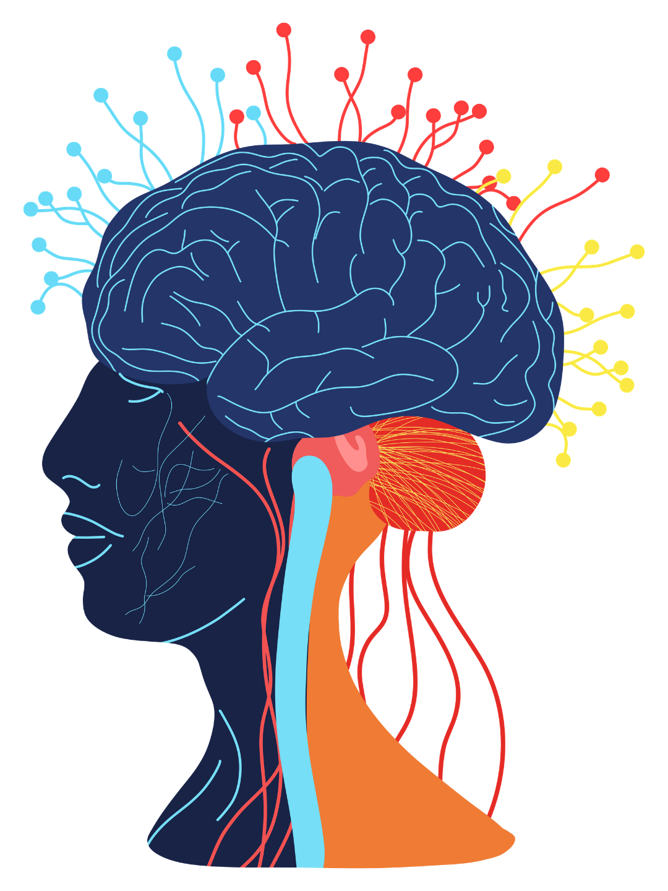

<style>
.cv{display:block;margin-top:20px;align-self:center}
.fig{position:relative;margin:4px auto 0;width:480px;height:640px}
.fig::before{content:"";position:absolute;left:-110px;top:-10px;width:700px;height:700px;border-radius:50%;background:radial-gradient(circle,rgba(214,219,248,.92) 0%,rgba(178,186,238,.75) 38%,rgba(139,147,232,.30) 58%,rgba(14,20,48,0) 72%)}
.fig img{position:relative;width:100%;height:100%;object-fit:contain;display:block}
.fig .lbl{position:absolute;font-weight:900;font-size:26px;color:#F5B49C;background:rgba(14,20,48,.8);padding:6px 14px;border-radius:999px;white-space:nowrap}
.fig .lbl.c{color:#AAB3DD}
.photo{position:relative;margin:18px auto 0;width:560px;height:560px;border-radius:40px;overflow:hidden;box-shadow:0 0 80px rgba(74,91,232,.35)}
.photo img{width:100%;height:100%;object-fit:cover;object-position:50% 52%;display:block}
.photo .lbl{position:absolute;font-weight:900;font-size:26px;color:#F5B49C;background:rgba(14,20,48,.72);padding:6px 14px;border-radius:999px;white-space:nowrap}
.photo .lbl.c{color:#AAB3DD}
.mid{font-weight:600;font-size:38px;line-height:1.4}
.li2{display:flex;flex-direction:column;gap:8px;background:var(--raised);border:3px solid var(--line);border-radius:24px;padding:24px 32px}
.li2 b{font-weight:900;font-size:38px;line-height:1.15}
.li2 span{font-weight:600;font-size:31px;line-height:1.35;color:var(--muted)}
.list2{display:flex;flex-direction:column;gap:18px}
.two{display:grid;grid-template-columns:1fr 1fr;gap:20px}
.two div{border-radius:26px;padding:28px 30px;font-weight:700;font-size:32px;line-height:1.3}
.two small{display:block;font-weight:800;font-size:21px;letter-spacing:.14em;text-transform:uppercase;margin-bottom:12px}
.two .a{background:var(--coral-soft)}.two .a small{color:var(--coral-text)}
.two .b{background:var(--peri-soft)}.two .b small{color:var(--peri)}
.try{background:var(--raised);border:3px solid var(--peri);border-radius:30px;padding:40px 44px;display:flex;flex-direction:column;gap:22px}
.try .k{font-weight:800;font-size:24px;letter-spacing:.16em;color:var(--peri);text-transform:uppercase}
.try p{font-weight:900;font-size:54px;line-height:1.15}
.lim{display:flex;flex-direction:column;gap:26px}
.lim div{font-weight:600;font-size:35px;line-height:1.35;padding-left:34px;position:relative}
.lim div::before{content:"";position:absolute;left:0;top:18px;width:14px;height:14px;border-radius:50%;background:var(--coral)}
.lim b{font-weight:900}
.cols{display:grid;grid-template-columns:1fr 1fr;gap:18px}
.col{border-radius:26px;padding:26px 26px;display:flex;flex-direction:column;gap:12px}
.col small{font-weight:800;font-size:21px;letter-spacing:.14em;text-transform:uppercase}
.col > b{font-weight:900;font-size:36px;line-height:1.1}
.col p{font-weight:600;font-size:29px;line-height:1.33}
.col.cs{background:var(--coral-soft)}.col.cs small{color:var(--coral-text)}
.col.cc{background:var(--peri-soft)}.col.cc small{color:var(--peri)}
.route{background:var(--raised);border:3px solid var(--line);border-radius:26px;padding:24px 30px;display:flex;flex-direction:column;gap:12px}
.route small{font-weight:800;font-size:22px;letter-spacing:.14em;text-transform:uppercase;color:var(--peri)}
.route.pain{border-color:var(--coral)}.route.pain small{color:var(--coral-text)}
.route ol{list-style:none;padding:0;display:flex;flex-direction:column;gap:10px}
.route li{display:block;position:relative;padding-left:58px;font-weight:600;font-size:31px;line-height:1.33}
.route li span{position:absolute;left:0;top:0;width:42px;height:42px;border-radius:50%;background:var(--peri);color:#0E1430;font-weight:900;font-size:22px;display:flex;align-items:center;justify-content:center}
.route.pain li span{background:var(--coral)}
.who{font-weight:600;font-size:30px;color:var(--muted);line-height:1.35}
.next{margin-top:auto;margin-bottom:22px;font-weight:800;font-size:31px;line-height:1.3;color:var(--peri)}
.next + .src{margin-top:0}
</style>

<section class="slide" id="s1">
  <div class="top"><div class="brand"><span><span class="we">We</span><span class="self">Self</span></span></div><div class="count">1/12</div></div>
  <div class="fig">
    
    <span class="lbl c" style="left:-10px;top:130px">corteccia →</span>
    <span class="lbl" style="left:372px;top:362px">← tronco encefalico</span>
  </div>
  <div style="margin-top:auto;gap:26px" class="stack">
    <span class="tag"><i></i>Curiosità · un'ipotesi, non un risultato</span>
    <h1 style="font-size:78px">Il senso di «io» potrebbe nascere nel <span class="hl">tronco encefalico</span>.</h1>
    <p class="mid muted">Due neuroscienziati hanno proposto un'idea che va contro la visione più diffusa: non sarebbe la corteccia a farci sentire presenti.</p>
    <p style="font-weight:900;font-size:36px;color:var(--peri)">Scorri →</p>
  </div>
</section>

<section class="slide" id="s3">
  <div class="top"><p class="kicker we">Prova adesso</p><div class="count">2/12</div></div>
  <div class="stack" style="margin-top:110px;gap:56px">
    <div class="try"><span class="k">Un piccolo esperimento</span><p>Chiudi gli occhi e copri le orecchie per qualche secondo.</p></div>
    <p class="mid" style="font-size:46px;line-height:1.35">Gran parte di ciò di cui eri consapevole un attimo prima sparisce. Ma <b>tu ci sei ancora, per intero</b>.</p>
    
  </div>
  <p class="next">Che cos'è questo «tu» che resta? Due neuroscienziati hanno un'ipotesi →</p>
  <div class="src"><b>FONTE</b><span><em>Devor &amp; Baron, 2026</em> · The Neuroscientist (ipotesi)</span></div>
</section>

<section class="slide" id="s2">
  <div class="top"><p class="kicker we">L'ipotesi</p><div class="count">3/12</div></div>
  <div class="stack" style="margin-top:56px;gap:30px">
    <h2 style="font-size:58px">Due cose diverse che chiamiamo «coscienza».</h2>
    <div class="two">
      <div class="a"><small>Il «me dentro»</small>La sensazione di esserci, di essere presenti: c'è anche a occhi chiusi.</div>
      <div class="b"><small>Essere consapevoli di qualcosa</small>Un suono, un'immagine, un ricordo: ciò a cui si presta attenzione.</div>
    </div>
    <p class="mid">Secondo Marshall Devor e Mark Baron (Università Ebraica di Gerusalemme e Harvard), il «me dentro» nascerebbe in una piccola zona del <b>tronco encefalico</b>; la corteccia elaborerebbe invece ciò che vediamo, sentiamo e ricordiamo.</p>
  </div>
  <p class="next">Ma come lavorerebbero insieme tronco encefalico e corteccia? →</p>
  <div class="src"><b>FONTE</b><span><em>Devor &amp; Baron, 2026</em> · The Neuroscientist (ipotesi)</span></div>
</section>

<section class="slide" id="s2b">
  <div class="top"><p class="kicker we">Chi fa che cosa</p><div class="count">4/12</div></div>
  <div class="stack" style="margin-top:44px;gap:22px">
    <h2 style="font-size:52px">Secondo l'ipotesi, il lavoro sarebbe diviso così.</h2>
    <div class="cols">
      <div class="col cs"><small>Tronco encefalico</small><b>Decide e fa «sentire»</b>
        <p>Riceverebbe i segnali del <b>dolore</b> direttamente dai nervi e li trasformerebbe nella sensazione di dolore.</p>
        <p>Riceverebbe dalla corteccia una valutazione di <b>quanto conta</b> ciò che vediamo, sentiamo o ricordiamo.</p>
        <p>Farebbe da <b>arbitro</b>: sceglierebbe a quale flusso di informazioni dare attenzione cosciente e lo renderebbe vissuto in prima persona.</p></div>
      <div class="col cc"><small>Corteccia</small><b>Elabora e calcola</b>
        <p>Elaborerebbe <b>vista, udito, olfatto, tatto, gusto e ricordi</b>: per esempio, capire se un'ombra è un animale o una nuvola, tenendo conto del contesto.</p>
        <p>Calcolerebbe quanto quelle informazioni sono <b>importanti</b> e le manderebbe al tronco encefalico.</p>
        <p>Farebbe i calcoli complessi, ma senza il «via libera» del tronco andrebbe avanti <b>in automatico</b>.</p></div>
    </div>
  </div>
  <p class="next">Seguiamo un'informazione, passo per passo →</p>
  <div class="src"><b>FONTE</b><span><em>Devor &amp; Baron, 2026</em> · The Neuroscientist (ipotesi)</span></div>
</section>

<section class="slide" id="s2c">
  <div class="top"><p class="kicker we">Il percorso di un'informazione</p><div class="count">5/12</div></div>
  <div class="stack" style="margin-top:44px;gap:24px">
    <h2 style="font-size:52px">Due strade diverse, secondo gli autori.</h2>
    <div class="route"><small>Qualcosa che si vede</small>
      <ol><li><span>1</span>Gli occhi mandano il segnale alla <b>corteccia</b>.</li>
      <li><span>2</span>La corteccia riconosce che cos'è e valuta <b>quanto conta</b>.</li>
      <li><span>3</span>Il <b>tronco encefalico</b> decide se merita attenzione.</li>
      <li><span>4</span>Se sì, lo si vive in prima persona; se no, resta in automatico.</li></ol></div>
    <div class="route pain"><small>Il dolore</small>
      <ol><li><span>1</span>I nervi mandano il segnale <b>direttamente al tronco encefalico</b>.</li>
      <li><span>2</span>Lì diventerebbe dolore, <b>senza passare dalla corteccia</b>.</li></ol></div>
  </div>
  <p class="next">Il dolore fa eccezione. Ed è proprio da lì che partono gli indizi →</p>
  <div class="src"><b>FONTE</b><span><em>Devor &amp; Baron, 2026</em> · The Neuroscientist (ipotesi)</span></div>
</section>

<section class="slide" id="s4">
  <div class="top"><p class="kicker">Gli indizi</p><div class="count">6/12</div></div>
  <div class="stack" style="margin-top:44px;gap:20px">
    <h2 style="font-size:54px">Il punto di partenza è il <span class="hl">dolore</span>.</h2>
    <p class="mid muted" style="font-size:32px">Sono gli indizi che gli autori raccolgono da studi precedenti.</p>
    <div class="list2">
      <div class="li2"><b>La corteccia stimolata non fa male</b><span>Durante gli interventi da svegli, stimolare la corteccia fa vedere lampi o sentire suoni, ma quasi mai provare dolore.</span></div>
      <div class="li2"><b>Il dolore resta anche senza parti di corteccia</b><span>Lesioni anche ampie della corteccia non hanno tolto né il dolore né la coscienza.</span></div>
      <div class="li2"><b>Il tronco encefalico invece sì</b><span>Piccole lesioni in una zona precisa del tronco encefalico sono legate al coma; negli esperimenti degli autori sui ratti, un anestetico iniettato lì ha indotto l'anestesia.</span></div>
    </div>
  </div>
  <p class="next">Ma perché il dolore dovrebbe passare proprio dal tronco encefalico? →</p>
  <div class="src"><b>FONTE</b><span><em>Devor &amp; Baron, 2026</em> · The Neuroscientist (ipotesi)</span></div>
</section>

<section class="slide" id="s2d">
  <div class="top"><p class="kicker we">Perché proprio il tronco encefalico?</p><div class="count">7/12</div></div>
  <div class="stack" style="margin-top:44px;gap:22px">
    <h2 style="font-size:52px">La risposta degli autori è una <span class="hl">storia di evoluzione</span>.</h2>
    <div class="route"><small>Prima: il dolore e i predatori</small>
      <ol><li><span>1</span>Il morso di un predatore manda un segnale che dice subito «pericolo», senza bisogno di calcoli complessi.</li>
      <li><span>2</span>Questo segnale arriva al tronco encefalico, che fa scattare la fuga e, se serve, lo trasformerebbe in <b>dolore</b>.</li></ol></div>
    <div class="route"><small>Molto dopo: la corteccia</small>
      <ol><li><span>3</span>Per capire un'immagine o un suono servono calcoli potentissimi, arrivati solo con la <b>corteccia dei mammiferi</b>.</li>
      <li><span>4</span>Invece di «reinventare» la coscienza, l'evoluzione avrebbe <b>riusato</b> il circuito già presente nel tronco encefalico: la corteccia gli manderebbe i suoi risultati.</li></ol></div>
  </div>
  <p class="next">E tutto il resto di ciò che il cervello elabora? →</p>
  <div class="src"><b>FONTE</b><span><em>Devor &amp; Baron, 2026</em> · The Neuroscientist (ipotesi)</span></div>
</section>

<section class="slide" id="s5">
  <div class="top"><p class="kicker">Il pilota automatico</p><div class="count">8/12</div></div>
  <div class="stack" style="margin-top:60px;gap:30px">
    <h2 style="font-size:60px">«Siamo robot <span class="hl t">senzienti</span>», scrivono gli autori.</h2>
    <p class="mid">Secondo l'ipotesi, il «me dentro» sceglierebbe a che cosa dare attenzione; tutto il resto andrebbe avanti <b>col pilota automatico</b>.</p>
    <p class="mid">Gli esempi sono quotidiani: di notte ci si gira nel letto senza cadere, ci si sveglia se qualcuno dice il nostro nome anche in mezzo al rumore, la mente vaga mentre facciamo altro.</p>
  </div>
  <p class="next">Ma come si passa da una cosa all'altra? →</p>
  <div class="src"><b>FONTE</b><span><em>Devor &amp; Baron, 2026</em> · The Neuroscientist (ipotesi)</span></div>
</section>

<section class="slide" id="s5b">
  <div class="top"><p class="kicker">Come cambiare canale</p><div class="count">9/12</div></div>
  <div class="stack" style="margin-top:60px;gap:30px">
    <h2 style="font-size:58px">Il «me dentro» sarebbe come chi ha in mano il <span class="hl t">telecomando</span>.</h2>
    <p class="mid">Quando arriva un'informazione più importante, il tronco encefalico deciderebbe di <b>cambiare canale</b>: l'attenzione cosciente passerebbe dal flusso di prima a quello nuovo.</p>
    <p class="mid">Il flusso di prima non si spegnerebbe: continuerebbe <b>in automatico</b>. Resterebbe il ricordo di ciò che si stava seguendo, ma il seguito potrebbe sfumare.</p>
    <p class="mid muted">«È cambiato il canale della TV», scrivono gli autori. Non ci sarebbero due «io», uno che osserva l'altro: ce ne sarebbe uno solo, che sceglie dove guardare.</p>
  </div>
  <p class="next">Tutto questo è affascinante. Ma è dimostrato? →</p>
  <div class="src"><b>FONTE</b><span><em>Devor &amp; Baron, 2026</em> · The Neuroscientist (ipotesi)</span></div>
</section>

<section class="slide warmbg" id="s6">
  <div class="top"><p class="kicker warm">Ipotesi o certezza?</p><div class="count">10/12</div></div>
  <div class="stack" style="margin-top:90px;gap:36px">
    <p class="quote">«Ormai si sa dove nasce la coscienza.»</p>
    <span class="badge dip"><i>~</i>DA VERIFICARE</span>
    <p class="body">Non è così. Le teorie più diffuse mettono la coscienza nella <span class="hl">corteccia</span>; questa ipotesi le sfida.</p>
    <p class="body">Nessuna delle due visioni è stata dimostrata: la domanda è ancora aperta.</p>
  </div>
  <p class="next">Ecco che cosa l'articolo non può ancora dire →</p>
  <div class="src"><b>FONTE</b><span><em>Devor &amp; Baron, 2026</em> · The Neuroscientist (ipotesi)</span></div>
</section>

<section class="slide" id="s7">
  <div class="top"><p class="kicker warm">Perché è solo un'ipotesi</p><div class="count">11/12</div></div>
  <div class="stack" style="margin-top:60px;gap:30px">
    <h2 style="font-size:60px">Che cosa questo articolo <span class="hl">non dice</span></h2>
    <div class="lim">
      <div>È un articolo di <b>teoria</b>: non presenta dati nuovi, ma rilegge studi già esistenti.</div>
      <div>Va contro le teorie <b>più diffuse</b>, che mettono la corteccia al centro.</div>
      <div>Gli esperimenti degli autori sul tronco encefalico sono stati fatti sui <b>ratti</b>.</div>
      <div>Gli autori stessi scrivono che nessuna teoria, <b>compresa la loro</b>, spiega ancora come nasca l'esperienza in prima persona. Serviranno nuove ricerche.</div>
    </div>
  </div>
  <p class="next">E allora, che cosa ce ne facciamo? →</p>
  <div class="src"><b>FONTE</b><span><em>Devor &amp; Baron, 2026</em> · The Neuroscientist (ipotesi)</span></div>
</section>

<section class="slide cta" id="s8">
  <div class="top"><p class="kicker">Che cosa ce ne facciamo</p><div class="count">12/12</div></div>
  <div class="stack" style="margin-top:90px">
    <h2 style="font-size:70px">Lascia che il pilota automatico <span class="hl">lavori per te</span>.</h2>
    <p class="body">Gran parte di ciò che facciamo ogni giorno va avanti senza pensarci: per questo le abitudini contano. Con WeSelf un obiettivo diventa una settimana di piccole azioni, già in agenda, finché non diventano automatiche anche loro.</p>
    <span class="btn">Scopri WeSelf · link in bio</span>
  </div>
  <div class="ctafoot">
    <div class="brand"><span><span class="we">We</span><span class="self">Self</span></span></div>
    <small>Fonte completa nel primo commento</small>
  </div>
</section></body></html>
